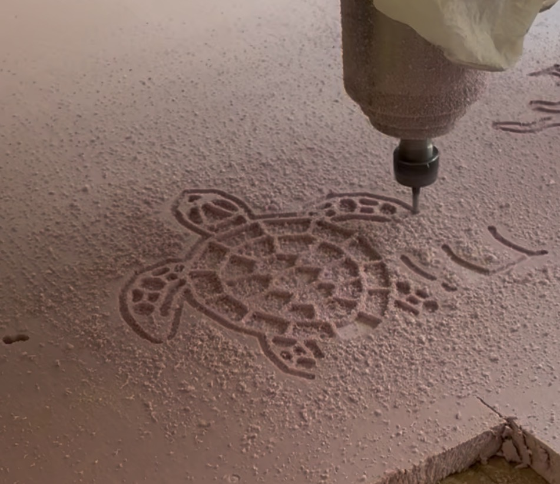

Reporte de Práctica: Preparación CAM en VCarve Pro y Maquinado en Router CNC Industrial
Institución: Universidad Iberoamericana Puebla
Departamento: Ingenierías / Mecatrónica
Asignatura: Proyectos de Ingeniería
Ubicación: Instituto de Diseño e Innovación Tecnológica (IDIT) - Taller de CNC
Supervisión Académica: Mtro. Oliver Ochoa
Integrantes del Proyecto: Roberto Alejandro y Colaboradores
Software CAM: VCarve Pro
Equipo de Maquinado: Router CNC Asia Robótica (Modelo AR-1325)
1. Objetivos
- General: Preparar, configurar y ejecutar el maquinado CNC de un modelo vectorial tridimensional (tortuga) mediante el software CAM VCarve Pro y el router CNC industrial Asia Robótica.
- Específicos:
- Importar archivos vectoriales en formato
.DXFa VCarve Pro, verificando el cierre de vectores, dimensiones de la pieza y alineación en el plano de trabajo. - Configurar trayectorias de herramienta de Perfilado y Cajeado (Pocketing), definiendo profundidades de corte, diámetros de fresa y velocidades.
- Exportar el código G posprocesado (
.nc) a una memoria USB mediante la configuración adecuada de posprocesador (AsiaRobotica-NK105). - Operar el Router CNC Asia Robótica AR-1325, comprendiendo el protocolo de encendido, uso de la cama de sacrificio, fijación mecánica mediante prensas/clamps, montaje de herramienta en el collet, tarado de ejes (\(X, Y, Z\)) y activación del sistema de aspiración/limpieza de viruta.
2. Marco Teórico y Software VCarve Pro
El maquinado por Router CNC se divide en dos fases indispensables: la fase CAM (Computer-Aided Manufacturing) y la fase de ejecución en máquina.
A. Preparación y Funciones Clave en VCarve Pro
- Importación
.DXFy Cierre de Vectores: Al importar geometrías externas, VCarve permite identificar trazos abiertos y unificarlos con la herramienta Join Vectors (Unir vectores). Vectores abiertos impiden generar operaciones de cajeado o perfilado cerrado. - Dimensionado del Material: Se definen las dimensiones exactas del bloque (\(X, Y, Z\)) y el origen del punto cero (usualmente esquina inferior izquierda y superficie superior del material).
- Cajeado (Pocketing / Machining): Operación donde la herramienta remueve el material contenido dentro de un contorno cerrado hasta alcanzar una profundidad calculada (\(Z\)), dejando cavidades limpias.
- Perfilado (Profiling): Trayectoria que sigue el contorno interior, exterior o sobre el vector para realizar el corte completo de la silueta o el marcado de aristas.
- Posprocesado (
.nc): Traducción de las trayectorias virtuales a código numérico comprensible por el controlador DSP/NK105 de la máquina CNC.
3. Descripción de Evidencias e Imágenes de la Práctica
A continuación se detalla la secuencia del proceso mediante las fotografías y videos capturados durante la sesión de laboratorio:
Figura 1: Importación Vectorial y Cierre de Vectores en VCarve Pro
Muestra la interfaz de trabajo de VCarve Pro con el vector de la tortuga importado desde un archivo .DXF. Se verifica la escala del material (aislante de poliestireno extruido / espuma rígida) y el cierre perfecto de los contornos para permitir las operaciones de cajeado en las secciones del caparazón y extremidades.
 Figura 1: Organización de vectores y verificación de aristas cerradas para la tortuga en VCarve.
Figura 1: Organización de vectores y verificación de aristas cerradas para la tortuga en VCarve.
Figura 2: Configuración de Trayectorias y Exportación de Código G
Muestra el panel Trayectorias de herramientas de VCarve. Se aprecian las operaciones configuradas: Perfilado 1 y Cajeado 1. En el panel superior se selecciona el posprocesador específico de la máquina: AsiaRobotica-NK105.3-arcs (*.nc) para guardar las trayectorias directamente en la memoria USB.
 Figura 2: Selección de operaciones (Perfilado/Cajeado) y exportación posprocesada para la controladora Asia Robótica.
Figura 2: Selección de operaciones (Perfilado/Cajeado) y exportación posprocesada para la controladora Asia Robótica.
Figura 3: Fijación del Material y Cama de Sacrificio
Muestra el detalle del área de trabajo del router CNC Asia Robótica AR-1325. Se observa la cama de sacrificio de MDF en la parte inferior, sobre la cual se coloca la placa de poliestireno rosa. La pieza se asegura rígidamente utilizando un clamp o prensa de sujeción mecánica sobre el riel en T (T-slot) para evitar vibraciones o desplazamientos durante el maquinado.
 Figura 3: Sistema de fijación con clamp sobre el riel en T y la cama de sacrificio del router CNC.
Figura 3: Sistema de fijación con clamp sobre el riel en T y la cama de sacrificio del router CNC.
Figura 4: Explicación del Equipo y Protocolo por el Mtro. Oliver Ochoa
El Mtro. Oliver Ochoa explica el funcionamiento general de la mesa de maquinado del Router CNC Asia Robótica AR-1325, señalando los límites de carrera de los ejes \(X, Y, Z\), el área de sujeción y el uso de los controles del panel principal.
 Figura 4: Explicación previa a la puesta en marcha sobre el Router CNC Asia Robótica AR-1325.
Figura 4: Explicación previa a la puesta en marcha sobre el Router CNC Asia Robótica AR-1325.
Figura 5: Montaje de la Fresa y Ajuste del Collet
Estudiantes realizando el montaje de la fresa de corte en el husillo (spindle). Se observa el proceso de inserción del collet/boquilla y el apriete mecánico mediante la llave para asegurar que la herramienta no sufra desalineamiento o soltura bajo carga.
 Figura 5: Procedimiento de ajuste de la herramienta en el husillo del router CNC.
Figura 5: Procedimiento de ajuste de la herramienta en el husillo del router CNC.
Figura 6: Terminado de tortuga
Se muestra una imagen de la maquinaria realizando el terminado final de la figura que agregamos previamente en archivo dxf.

Figura 5: Tortugadxf.4. Resumen del Protocolo de Operación del Router CNC
| Etapa | Operación Clave | Equipo / Componente |
|---|---|---|
| 1. Diseño CAM | Cierre de vectores, cajeado y perfilado | Software VCarve Pro |
| 2. Posprocesado | Exportación de archivo .nc |
Posprocesador AsiaRobotica-NK105 en memoria USB |
| 3. Encendido y Calibración | Puesta en marcha y posicionamiento de orígenes (\(X_0, Y_0, Z_0\)) | Control DSP / Controladora NK105 |
| 4. Fijación del Material | Presión mecánica sobre la cama de sacrificio | Clamps / Prensas sobre riel T-slot |
| 5. Herramental | Ajuste de fresa con collet y apriete manual con llave | Husillo (Spindle) refrigerado |
| 6. Ejecución y Limpieza | Activación del spindle y extractor de viruta | Sistema de aspiración del IDIT |
5. Conclusiones
- La correcta gestión digital en VCarve Pro (cierre de vectores y aplicación de offset/cajeado) es indispensable para evitar colisiones de la herramienta o maquinados incompletos.
- La utilización de la cama de sacrificio garantiza que las herramientas penetren completamente el grosor de la pieza en operaciones de perfilado sin dañar la estructura de aluminio del router.
- La práctica permitió consolidar el flujo completo de ingeniería de manufactura asistida por computadora (CAD-CAM-CNC), logrando un producto final (tortuga) con excelente calidad superficial y tolerancias geométricas exactas.